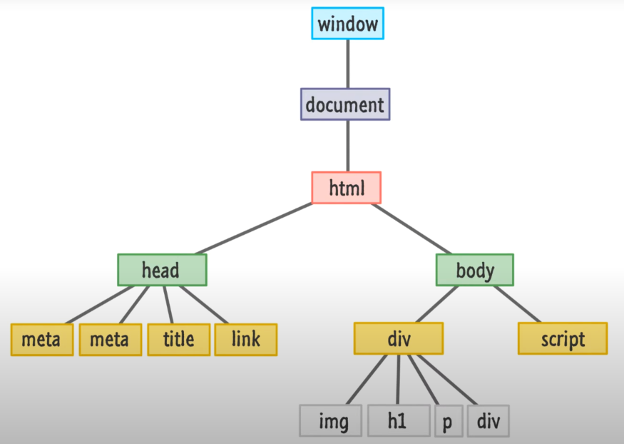
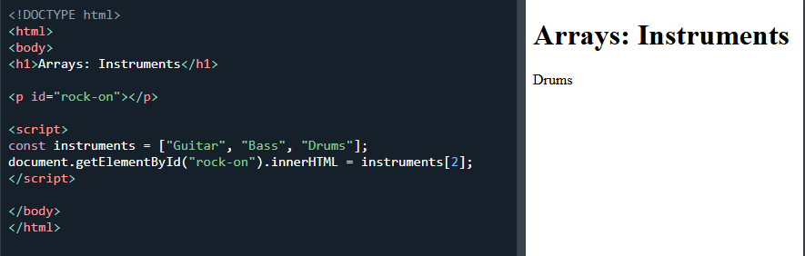

What is Javascript, how it operates & what tools are available to you to navigate or manipulate a webpage.
24 January 2025
◦ Javascript and it's relationship with HTML & CSS
So you want to make a website. Cool!! You've got the HTML structuring the contents on your page and the CSS making it look all nice. Also Cool!!
But without Javascript, that's about all it's going to be. A bunch of words on a webpage that look appealing. Javascript is the key ingredient that makes everything on your webpage work interactively.
If we compare a webpage to a human body:
HTML is the structure of the page and its contents //
- The body is comprised of a skeleton, muscles, etc.
CSS allows us to control the appearance of these contents//
- We can wear clothes, makeup, maybe we want to dye our hair
Javascript is how objects on your page interact together//
- Javascript acts as the brain, telling our body what we want it to do. Walk here, turn on a light switch, make yourself lunch.
Control Flow & Loops
Control flow is what dictates the order that statements are carried out when running a program. Both CSS and Javascript have a control flow that reads from top to bottom. The main difference with Javascript is that it can refer to other functions outside of the typical flow before continuing.
A loop is a useful way to run a single statement but have it apply to multiple objects. Rather than having to write out individual statements for each object, you can instead create a loop that applies the same statement to multiple objects in an array (we'll get to those in a bit) until it completes the loop.
◦ The DOM (Document Object Model) & how to use it
The DOM operates in a tree like structure, showing how each part of a website (node) relates to the element before and after it
The DOM allows us to navigate all of the components of a website as well as manipulate these components if we see the need to do so.
There is first the Window object, which is browser specific and allows you to display the contents of a webpage in a browsers tab. This allows you to do things such as enter the URL for a website, navigate the webpage using scroll bars & set things like bookmarks.
The Document object refers to the contents of a webpage and this is where you can read what content is in the page or manipulate this content with the DOM. This is also where you can view and react to events.
Javascript is the language used to run scripts that interface directly with the DOM allowing you to manipulate content, define and view the results of events & much more.
◦ Arrays & Objects
It will be important to know the difference between an Array and an Object if you want to know how you can get information from them.
An Array is a list that contains any number of entries and each one has an indexed position that starts from 0.
- In this example we can see an array of 3 instruments.
- We have pulled information from the array into the p section by referring to the id "rock-on".
- We have specified that we are looking at item "2" which has returned "Drums" as this is the 3rd position in the index if we count from 0.
An object is a singular item that can have multiple properties. These are known as keys and values and can be shown in the example below:
- In this example we can see an object with with 3 keys.
- We have pulled information from the object into the p section by referring to the id "metal".
- Using the object.key ("guitar.brand") dot notation format in our script, we have specified that we are looking at the "brand" key for this guitar which has returned the "Ibanez" value.
◦ Functions & their purpose
Functions are a very useful way for creating a piece of code that you can reuse again and again whenever you need it, this is known as "calling the function". This can be something that happens as soon as the page is loaded, or you can assign a function to an interaction such as a button click for example.
Functions are the main method we will utilise to design an interaction and within this function we can assign multiple steps which will occur every time we call this function. This becomes important for limiting the number of times we need to write out these steps as once a function is created we can simply call the function each time we want to repeat the same steps.